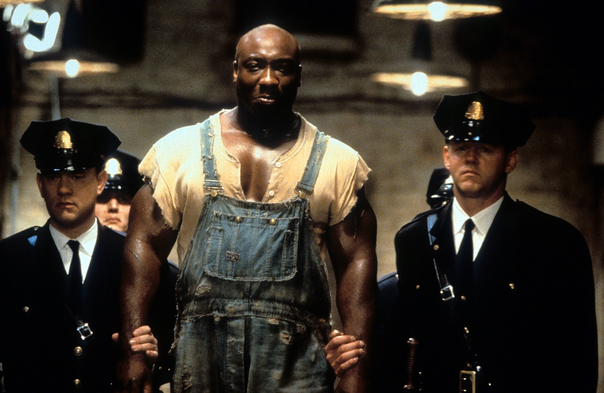
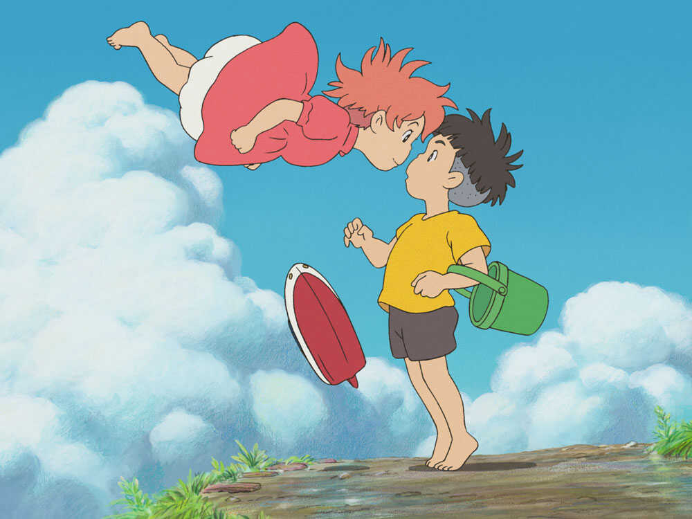

TRAGIC CATEGORY
Titanic
Release date:
February 4, 1998
Director:
James Cameron
Cast:
Kate Winslet | Leonardo DiCaprio | Billy Zane
Watch Trailer

The Green Mile
Release date:
March 15, 2000
Director:
Frank Darabont
Cast:
Michael Clarke Duncan | Tom Hanks | David Morse
Watch Trailer
All the Bright Places
Release date:
February 28, 2020
Director:
Brett Haley
Cast:
Justice Smith | Elle Fanning | Felix Mallard
Watch Trailer
My Girl
Release date:
August 6, 2022
Director:
Goro Taniguchi
Cast:
Mayumi Tanaka | Kaori Nazuka | Yuki Kaji
Watch Trailer

A Walk To Remember
Release date:
July 19, 2008
Director:
Christopher Nolan
Cast:
Liam Neeson | Matt Damon | Cate Blanchett
Watch Trailer